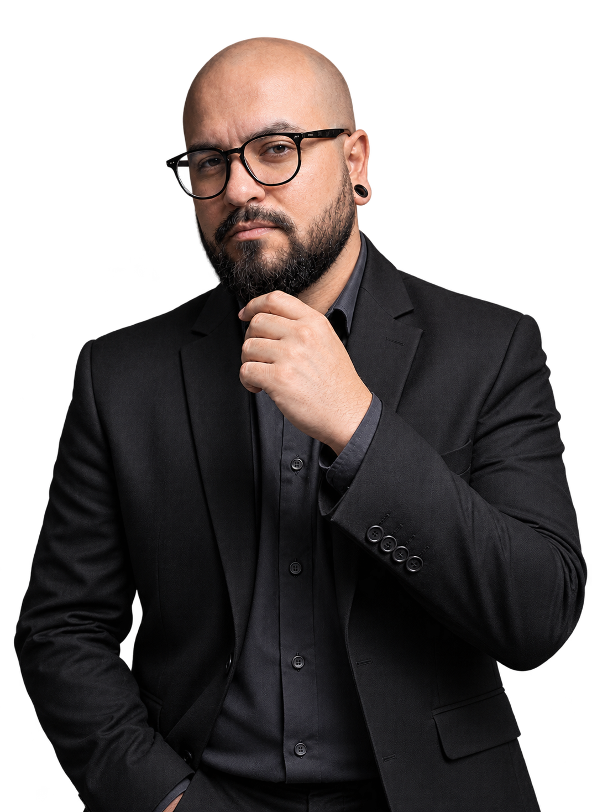

Desenvolvimento web
Aplicações web com as tecnologias que estudo atualmente.
ENGENHARIA DE SOFTWARE DESENVOLVIMENTO WEB
Levo para o código a prática de investigar problemas, entender cenários e buscar soluções. Estudo Engenharia de Software e desenvolvo aplicações com JavaScript, TypeScript e Node.js.

Minha trajetória na tecnologia começou pelo suporte técnico, onde aprendi que resolver problemas vai muito além de encontrar uma solução: envolve entender as necessidades das pessoas, comunicar com clareza e garantir uma boa experiência para o usuário.
Atualmente, curso Engenharia de Software e direciono meus estudos para o desenvolvimento Full Stack com JavaScript, aprofundando conhecimentos em JavaScript, TypeScript, Node.js, Git e GitHub. Tenho como objetivo construir aplicações que unam qualidade, boas práticas de desenvolvimento e uma experiência positiva para quem as utiliza.
A experiência em Suporte Técnico me proporcionou uma base sólida em troubleshooting, análise de incidentes, gestão de SLA e identificação de causas-raiz, habilidades que hoje complemento com o aprendizado de arquitetura de software, modelagem, estruturas de dados e desenvolvimento de aplicações.
Acredito que tecnologia é construída de forma colaborativa. Valorizo ambientes que incentivam aprendizado contínuo, troca de conhecimento, respeito às pessoas e melhoria constante. Estou em busca da minha primeira oportunidade como Desenvolvedor Full Stack, em que eu possa aplicar o que venho aprendendo, contribuir com o time e continuar evoluindo técnica e profissionalmente.
Já atuei em ambientes de vendas e atendimento ao cliente, desenvolvendo habilidades de comunicação e resolução de problemas, fui vendedor de automoveis, trabalhei com customer experience ambas experiencias na Kavak.com, também fui vendedor na Renault e Iplace Apple premium resseler, onde realizava vendas consultivas.
Atuação em suporte técnico, atendimento ao cliente, análise de incidentes e resolução de problemas.
Em 2026 dei inicio a minha transição para o desenvolvimento de software, Iniciei o bacharelado em Engenharia de Software, focando em Estudos voltados para JavaScript, TypeScript, Node.js, Git e desenvolvimento web.
Buscando minha primeira oportunidade como Desenvolvedor Full Stack ou Backend.
Aplicações web com as tecnologias que estudo atualmente.
Prática com APIs REST, banco de dados e lógica de negócio.
Construção de interfaces adaptáveis e focadas na usabilidade.
Evolução constante através de estudos e projetos.
Estas são algumas das tecnologias que utilizo atualmente.
Esta seção será atualizada com projetos e estudos práticos que complementam minha formação. Enquanto isso, você pode acompanhar meus repositórios no GitHub.